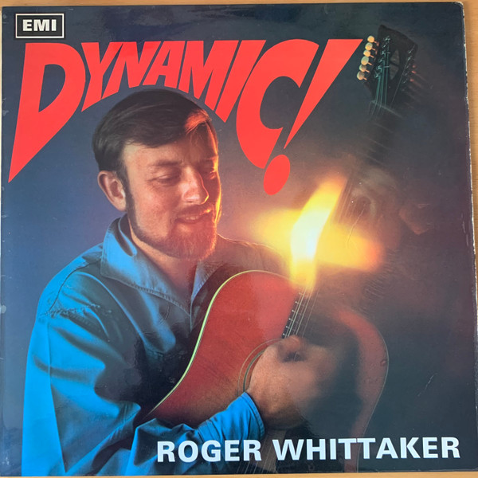

LP
Dynamic!
Roger Whittaker
Cover VG
Media: VG+ · Sleeve: VG
CA$10.00
Discogs SuggestedCA$14.45
Discogs MedianCA$14.45
Discogs HighCA$14.45
- Year
- 1967
- Label
- Columbia
- Catalog #
- SCX 6182
- Country
- GBUK
- Genre / Style
- Folk, World, & Country · Folk, African